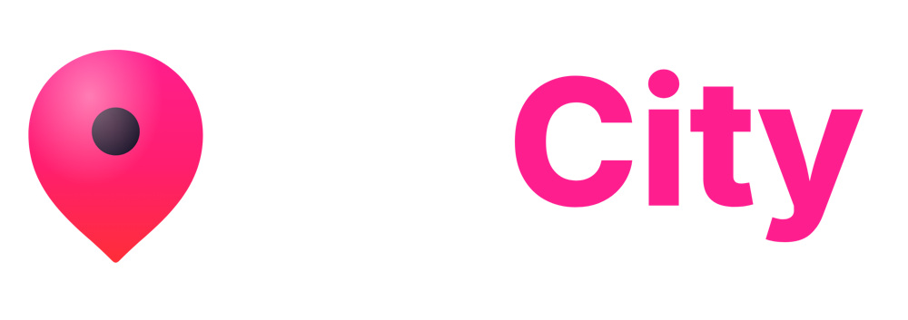
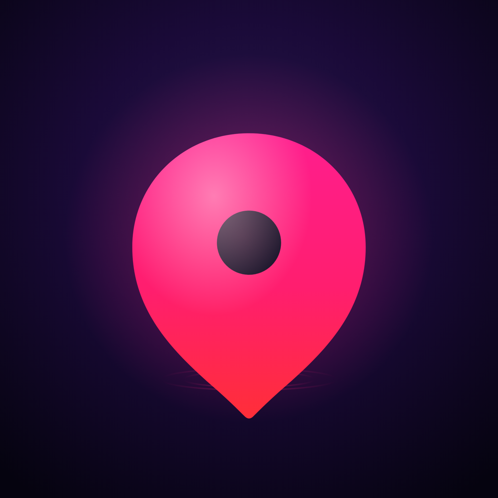

Charte graphique
Identité visuelle, logo, couleurs, typographies et usages
01 · La marque
L'app de ta ville
MaCity rassemble tout ce qui bouge dans une ville, dans une seule application : concerts, soirées, spectacles, sport, food, sorties en famille, culture et évasion. Les habitants y trouvent quoi faire aujourd'hui et ce soir ; les lieux et organisateurs y gagnent en visibilité.
Promesse
Tout ce qui bouge dans ta ville, dans une seule app.
Signature
L'app de ta ville
Ton de voix
- On tutoie. MaCity parle comme un ami qui connaît les bons plans.
- Des phrases courtes, concrètes, orientées action : « Quoi faire ce soir ? ».
- Énergique sans en faire trop. Les emojis servent à repérer une rubrique, pas à décorer.
- Pas de jargon, pas d'anglicismes inutiles, et jamais de tiret cadratin.
Valeurs proposition à valider
📍
Local d'abordTa ville, tes quartiers, tes lieux. Chaque contenu est ancré quelque part.
✨
Tout au même endroitConcerts, sport, food, famille, nuit : plus besoin de dix applis.
🎟️
AccessibleGratuit pour les utilisateurs. Les bons plans et les sorties gratuites sont mis en avant.
⚡
VivantCe qui se passe aujourd'hui, ce soir, en direct : stories, live, nouveautés.
🤝
CommunautéCe sont les habitants et les pros locaux qui font MaCity.
MaCity · Charte graphique · 02
02 · Le logo
Le logo
Le logo associe le pin (le repère sur la carte, symbole du « ici ») et le mot MaCity composé en Inter ExtraBold. « Ma » porte la proximité, « City » en rose porte l'énergie de la ville.
Version principale, fond sombreVersion principale, fond clair
Déclinaisons
Monochrome noir

Monochrome blanc
Icône d'application
MaCity · Charte graphique · 03
02 · Le logo
Règles d'utilisation
Zone de protection
Autour du logo, garder une marge vide au moins égale à la hauteur du « M ». Aucun texte, bord de page ou autre logo ne doit y entrer.
Tailles minimales
| Version | Écran | Impression |
|---|
| Logo horizontal | 120 px de large | 30 mm |
| Logo vertical | 80 px de large | 20 mm |
| Pin seul | 24 px de haut | 6 mm |
Choisir la bonne version
- Fond sombre ou photo foncée : version fond sombre (Ma en blanc).
- Fond blanc ou clair : version fond clair (Ma en Nuit MaCity).
- Fond rose, violet ou dégradé : monochrome blanc.
- Impression une couleur, tampon, gravure : monochrome noir.
- Avatar de réseau social, favicon : icône d'application.
À ne pas faire
Logo couleur sur fond rose
Ajouter une ombre ou un effet
Utiliser l'ancien logo violet
MaCity · Charte graphique · 04
03 · Couleurs
Couleurs de marque
Le Rose MaCity est la couleur signature : c'est lui qui rend la marque reconnaissable. Il s'appuie sur une base nuit (violet très sombre) qui évoque la ville le soir.
Rose MaCity
#FF1E8E
RVB 255, 30, 142
CMJN 0, 88, 44, 0
Couleur signature : mot City du logo, haut du pin
Rose framboise
#FF1E6E
RVB 255, 30, 110
CMJN 0, 88, 57, 0
Milieu du dégradé du pin
Rouge corail
#FF2E38
RVB 255, 46, 56
CMJN 0, 82, 78, 0
Pointe du pin, fin du dégradé
Nuit MaCity
#1A0F2E
RVB 26, 15, 46
CMJN 43, 67, 0, 82
Mot Ma sur fond clair, texte principal
Nuit profonde
#0A0514
RVB 10, 5, 20
CMJN 50, 75, 0, 92
Fond de l'app en mode sombre
Violet nuit
#1A0A38
RVB 26, 10, 56
CMJN 54, 82, 0, 78
Fond de l'icône d'app
Proportions conseillées
Nuit 55 %
Clair 25 %
Rose 12 %
Cyan 8 %
Le rose reste un accent : un titre, un bouton, un mot clé. Un visuel entièrement rose perd en impact et en lisibilité. Le cyan sert de contrepoint froid, par petites touches.
MaCity · Charte graphique · 05
03 · Couleurs
Couleurs de l'application
Couleurs utilisées dans l'interface de l'app (fichier design_tokens.dart). Le Magenta sert aux éléments interactifs ; il est volontairement un peu plus froid que le Rose MaCity du logo.
Magenta
#E91E63
RVB 233, 30, 99
CMJN 0, 87, 58, 9
Boutons, éléments actifs, liens
Violet
#6A1B9A
RVB 106, 27, 154
CMJN 31, 82, 0, 40
Dégradé principal, accents
Violet profond
#4B1174
RVB 75, 17, 116
CMJN 35, 85, 0, 55
Fin du dégradé principal
Rose néon
#F4247C
RVB 244, 36, 124
CMJN 0, 85, 49, 4
Badge LIVE, pastille néon
Cyan
#22D3EE
RVB 34, 211, 238
CMJN 86, 11, 0, 7
Accent froid, contour néon
Vert gratuit
#0E8A4F
RVB 14, 138, 79
CMJN 90, 0, 43, 46
Mention Gratuit
Rubriques
Chaque rubrique a sa couleur, utilisée pour les icônes, pastilles et accents de la rubrique.
Night
#A855F7
RVB 168, 85, 247
CMJN 32, 66, 0, 3
Nuit & sorties
Food
#FB923C
RVB 251, 146, 60
CMJN 0, 42, 76, 2
Food & lifestyle
Culture
#22D3EE
RVB 34, 211, 238
CMJN 86, 11, 0, 7
Culture & arts
Sport
#22C55E
RVB 34, 197, 94
CMJN 83, 0, 52, 23
Sport
Fiesta
#EF4444
RVB 239, 68, 68
CMJN 0, 72, 72, 6
Fêtes, événements forts
MaCity · Charte graphique · 06
03 · Couleurs
Étiquettes et neutres
Étiquettes de catégorie
Teintes pastel des pastilles dans les listes d'événements, toujours avec un texte Encre (#15121C).
Étiquette Food
#FFD93D
RVB 255, 217, 61
CMJN 0, 15, 76, 0
Pastille catégorie dans les listes
Étiquette Night
#C4B5FD
RVB 196, 181, 253
CMJN 23, 28, 0, 1
Étiquette Culture
#A5F3E4
RVB 165, 243, 228
CMJN 32, 0, 6, 5
Étiquette Sport
#BFDBFE
RVB 191, 219, 254
CMJN 25, 14, 0, 0
Étiquette Famille
#FED7AA
RVB 254, 215, 170
CMJN 0, 15, 33, 0
Étiquette Évasion
#FBCFE8
RVB 251, 207, 232
CMJN 0, 18, 8, 2
Neutres
Blanc
#FFFFFF
RVB 255, 255, 255
CMJN 0, 0, 0, 0
Fond des listes
Crème
#FAFAF7
RVB 250, 250, 247
CMJN 0, 0, 1, 2
Fond clair de l'app
Sable
#F1EEE9
RVB 241, 238, 233
CMJN 0, 1, 3, 5
Fond clair secondaire
Encre
#15121C
RVB 21, 18, 28
CMJN 25, 36, 0, 89
Texte sur fond blanc
Ardoise
#4A4458
RVB 74, 68, 88
CMJN 16, 23, 0, 65
Texte secondaire sur fond blanc
Lavande claire
#F5F0FF
RVB 245, 240, 255
CMJN 4, 6, 0, 0
Texte sur fond sombre
Lavande
#B5A8D0
RVB 181, 168, 208
CMJN 13, 19, 0, 18
Texte secondaire sur fond sombre
Valeurs CMJN calculées automatiquement depuis le RVB, à faire valider par l'imprimeur (profil Fogra39 conseillé).
MaCity · Charte graphique · 07
03 · Couleurs
Dégradés
Les dégradés donnent la sensation de lumière et de soirée propre à MaCity. Les fichiers prêts à l'emploi (1920 × 1080) sont dans 04-elements-graphiques/degrades.
Dégradé du pin
#FF1E8E , #FF1E6E , #FF2E38
180°
Dégradé principal
#E91E63 , #6A1B9A , #4B1174
135°
Ciel de nuit
#362268 , #6B2FC5 , #C026D3 , #F4247C
135°
Éditorial
#E91E63 , #FBBF24
135°
Texte chaud
#FFD88A , #FF9EC4
90°
Dégradé du pin : réservé au logo et au pin. Dégradé principal : bannières et boutons forts. Ciel de nuit : tout ce qui touche au soir (« Quoi faire ce soir »). Éditorial : mises en avant. Texte chaud : un mot en relief sur fond sombre.
MaCity · Charte graphique · 08
04 · Typographies
Typographies
Quatre familles, toutes gratuites (licence SIL Open Font), fournies dans 03-typographies et disponibles sur Google Fonts.
Inter ExtraBoldLogo uniquement
MaCity
Réservée au mot-symbole. Ne pas l'utiliser pour les titres, afin que le logo reste unique.
GeistTypographie principale de l'app : titres et textes
Quoi faire ce soir à Toulouse ?
Concerts, soirées, spectacles et bons plans : tout ce qui bouge dans ta ville, dans une seule app.
Regular 400Medium 500SemiBold 600Bold 700
Geist MonoSurtitres, étiquettes, chiffres
CE SOIR · 21H00 · GRATUIT
Toujours en majuscules espacées, en petite taille.
PoppinsSupports de communication : flyers, affiches, posts, écran de démarrage
Ta ville, en plus vivant.
Plus ronde et chaleureuse, elle convient aux visuels grand format et aux réseaux sociaux.
Hiérarchie dans l'app
| Rôle | Police | Taille | Graisse |
|---|
| Grand titre | Geist | 28 px | Regular, interlettrage -3,5 % |
| Titre de section | Geist | 22 px | Medium |
| Titre de carte | Geist | 16 px | SemiBold |
| Texte courant | Geist | 13 à 14 px | Regular |
| Bouton | Geist | 13 px | SemiBold |
| Surtitre | Geist Mono | 10,5 px | Medium, capitales, interlettrage 20 % |
MaCity · Charte graphique · 09
05 · Éléments graphiques
Éléments graphiques
Le pinSymbole central. Seul, il marque un lieu, une ville, un point de rendez-vous.
Pastille néonRond sombre #160C2E, contour rose néon #F4247C et reflet cyan. Réservée au soir.
Pastilles de filtreEntièrement arrondies. Active : fond magenta, texte blanc.
Étiquettes de catégoriePastel, texte Encre, en petite taille au-dessus du titre d'un événement.
Bouton principalDégradé principal ou magenta plein, texte blanc Geist SemiBold, coins arrondis 14 px.
CartesPhoto en pleine largeur, coins arrondis 20 px, dégradé sombre en bas pour lire le texte.
Rubriques et pictogrammes
☀️ Concerts & spectacles🌙 Nuit & sorties🍽️ Food🎨 Culture
👨👩👧👦 Famille⚽ Sport✈️ Évasion🎮 Gaming
Arrondis
| Élément | Rayon |
|---|
| Pastilles, filtres | totalement arrondi |
| Boutons icône | 14 px |
| Champs de saisie | 16 px |
| Cartes | 20 px |
| Grandes cartes, barre d'onglets | 22 px |
MaCity · Charte graphique · 10
06 · Applications
L'app en situation
Écrans actuels de l'application. Captures haute définition dans 05-mockups/captures-app.
QR code de téléchargement
MaCity · Charte graphique · 11
07 · Fichiers
Contenu du dossier
| Dossier | Contenu |
|---|
| 01-logos/svg | Logos vectoriels (fond sombre, fond clair, noir, blanc, vertical, pin, icône). À privilégier pour l'impression et les grands formats. |
| 01-logos/png | Les mêmes logos en PNG transparent haute définition. |
| 01-logos/originaux-app | Fichiers d'origine utilisés dans l'application et sur les stores. |
| 01-logos/archive | Ancienne identité violette (avril 2026). Ne plus utiliser. |
| 02-couleurs | Palette en CSS, JSON et nuancier texte (HEX, RVB, CMJN). |
| 03-typographies | Inter, Geist, Geist Mono, Poppins (TTF) avec leurs licences. |
| 04-elements-graphiques | Dégradés en PNG, QR codes de téléchargement. |
| 05-mockups | Captures de l'app actuelle, et de l'ancienne interface pour mémoire. |
MaCity · Charte graphique · 12